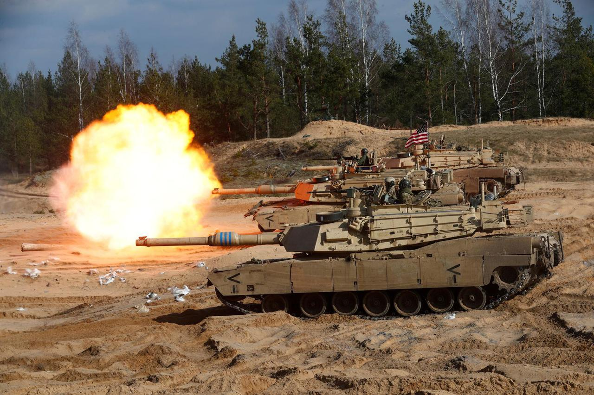

Moderni Američki oklop
Moderni američki oklop temelji se na vrhunskoj tehnologiji, modularnosti i prilagodbi suvremenim borbenim uvjetima. Glavni borbeni tenk M1A2 Abrams ostaje okosnica američkih oklopnih snaga, opremljen naprednim sustavima za upravljanje vatrom, višeslojnim kompozitnim oklopom i opcionalnim aktivnim zaštitnim sustavima poput Trophy. Moderna verzija, M1A2 SEPv3, uključuje poboljšanu elektroničku arhitekturu, veću energetsku učinkovitost i bolje sustave preživljavanja na bojištu.
LOL zamisli koristiti metrički sustav...
Abrams - M1 Abrams je glavni borbeni tenk američke vojske koji je originalno zamišljen kao nasljednik tenka M-60 i američki odgovor na tadašnji sovjetski tenk T-72. Pojedini zapadni stručnjaci su ga okarakterizirali najboljim tenkom na svijetu. Među prvima je uveo napredne elektroničke sustave poput GPS-a, balističkog računala i infracrvenih kamera te odlično rješenje smještaja granata u zasebnom odjeljku što minimizira katastrofalne posljedice u slučaju proboja kupole.
